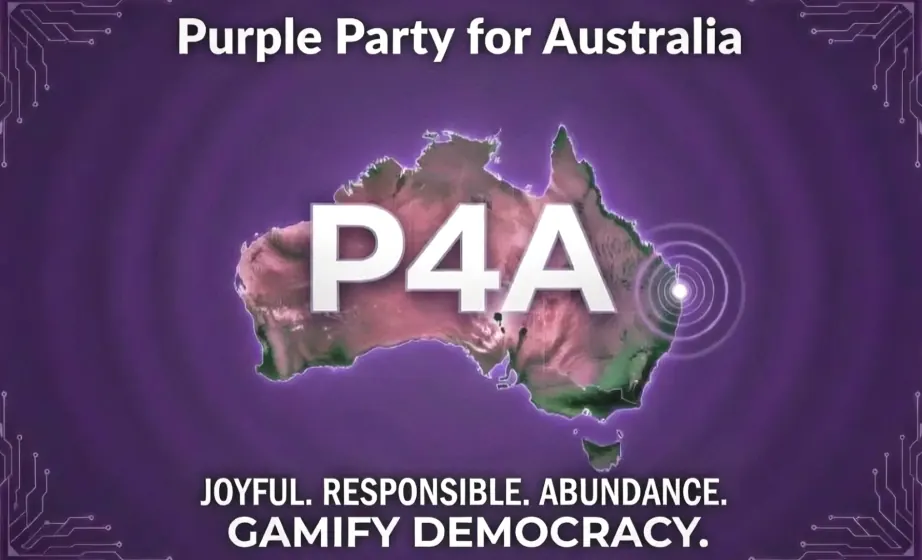

Secure infrastructure sits alongside a visible workshop, paid operators, creators, learners and technical support.

Civic nervous system
Web3 Sensorium
A public-interest sensorium would let communities compare maps, data, law, history, infrastructure and scientific models without turning citizens into raw material.
Draft room
Open debate needs better instruments.
The Web3 Sensorium is a draft research direction for a shared digital twin of civic and natural systems: open-source where possible, local-first where privacy matters, and clear about what is known, what is modelled and what is speculative.
Its job is not to make a giant public database of everyone. Its job is to let communities test claims, compare evidence, model risk and argue with assumptions in the open.
Community intelligence · October 2026
Serious compute. A local say.
Between a phone and a hyperscale centre sits Luke’s missing middle: serious computing controlled by towns, islands, libraries, universities, hospitals, cooperatives and communities. A school can learn on real equipment; a hospital can keep protected workloads close; filmmakers can render; researchers can model reefs, farms and public infrastructure. The machine follows the purpose.
That gives the Sensorium somewhere to live: local models, maps, legal memory and simulations held by people who can inspect, maintain and change the system. Sovereignty means custody, keys, skills, recovery and the ability to leave a provider, as well as where the machine sits.
Community intelligence · October 2026
One connected continuum. Different jobs.
Personal / householdPrivate AI, personal memory, keys and permissions on devices people control.
Edge / neighbourhoodSensors, local communications, disaster kiosks and fast nearby services.
Community missing middleSerious shared racks or clusters for larger models, simulation, rendering, training and public access.
State / nationalResearch, public-interest workloads, evaluation, coordination and sovereign backup.
HyperscaleFrontier training and elastic capacity, with portable workloads and meaningful provider choice.
Specialised horizonsQuantum and possible future orbital systems, connected through chosen interfaces. These are distinct capabilities, not a delivered local service.
This continuum comes from Luke’s Senate proposal, which explicitly calls for interoperability and permissions standards like his Web3 global sensorium plan. It does not rank people or require every workload to travel upwards.
Straddie’s L0–L2 labels describe scene briefs: private spaces, local places and bioregions. They are not these compute tiers. A bioregional scene brief can be written on a laptop; the chosen rendering job may need a different machine.
Community intelligence · October 2026
Ready S.E.T.: the node around the rack.
The Dunwich cultural intelligence node is a public working proposal. GB200 NVL72 supplies a concrete rack-scale reference, replaceable across vendors and generations. It is not evidence that a rack has been bought, installed or commissioned. Real workloads, a site pathway, power, liquid cooling, fire protection, secure networking, maintenance and lifecycle costs must determine the build.
Viewing, storage, transcription, model work, publication and review are separate choices. Technical administration does not grant cultural authority.
A connection names its cargo: a public method, selected output, benchmark, tool or learning exchange. Local identity and custody remain visible.
Community intelligence · October 2026
Use the public tools now.
The proposed compute node builds around work that already has public doors. The local brief builder runs in the browser tab and exports Markdown. The model workbench traces a selected question through sources, proposed rack work, outputs and human review. Neither requires pretending the physical rack is operational.
Build and download a local node briefExplore modelling workloadsChoose an everyday workloadOpen the project catalogue
The catalogue distinguishes the working Quandamooka Country Events Engine, the Gumpi ferry evidence prototype, the public citation-first Australian Legal Engine and Straddie scene builders from proposed screen networks, place projects and rack workloads. Follow each project’s own status and source trail.
Start with one question: what service should stay available when the island loses its outside connection? Record the people responsible, minimum map or directory, permissions, power and cooling budget, recovery exercise and what may be shared afterwards.
Community intelligence · October 2026
Build a pilot people can judge.
Luke’s Senate submission proposes a varied early-adopter network, public learning, open operating playbooks and published failures as well as successes. Its A$6 million all-in frontier-node allowance and approximately A$600 million for 100 sites are planning allowances, not vendor quotes or an approved budget. Smaller and reused equipment remain live choices.
Local rackMore local control and practical learning, with demanding maintenance, power, cooling and utilisation responsibilities.
Shared regional capacityPool scarce skills and equipment across hosts, while testing who gets access and what survives a network outage.
Personal + cloud firstLower initial local capital needs, but service dependency, recurring fees and exit costs must be visible.
Ask a library, university, hospital, council or cooperative to host a workload workshop. Use the node brief to name daily uses, paid roles, cultural permission, procurement alternatives and a stop-or-expand review. Publish measured utilisation, energy, cooling and water use, recovery results and community outcomes. Heat reuse needs an actual nearby heat demand and engineering; distribution alone does not erase resource impacts.
Core pattern
People, groups, councils and research teams should be able to hold their own data, work offline where needed, and share only what they choose or are lawfully authorised to share.
Maps, sensors, ledgers, legal constraints and scenarios can be modelled together, but the model remains a tool people can challenge.
Established models and speculative hypotheses can sit in the same arena if labels, evidence, uncertainty and prediction tests are visible.
External example
Straddie digital twin prompt builders.
The Straddie Digital Twin Builders site is a working example of the lighter side of this sensorium: plain-English forms that generate Markdown prompt packets for outside image, video, 3D, 4D and world-building tools.
It uses L0 for private spaces, L1 for local places and L2 for bioregion-scale briefs. This link leaves P4A. The pattern is useful here: describe the scene, choose the level, label the sources and keep sharing controls visible.
Data nexus
From scattered feeds to public sensemaking.
A future sensorium could bring together public data streams such as weather, space weather, earthquakes, infrastructure condition, environmental monitoring, historical maps, public records, community reports and legal sources.
Time-series memorySensor readings, events, alerts and observations need clean timestamps, units, locations and source labels.
Knowledge graphPeople, places, laws, assets, risks, documents and events need relationships, not just files in folders.
GraphRAGAI should answer from cited civic memory, not freewheel over law, science or public claims.
Civic use case
For P4A, the first practical version is grounded in everyday needs: public assets, council powers, climate and disaster risk, food resilience, energy, water, insurance pressure, state law and transparent project ledgers. The same source trails can support larger scientific questions while communities retain control of what they share.
Web3 without the grift
Decentralised identity, verifiable credentials, peer-to-peer sync, signed contributions and community governance can be useful. Tokens, markets and DAOs are not magic. Any civic Web3 layer must prove it improves consent, resilience, provenance or accountability before it earns a place.
Hard guardrail
Public-interest simulation must not become public surveillance. Private homes, health data, cultural knowledge, personal histories and sensitive community signals need consent, aggregation, access rules, human review and the right to stay out.
Last research run
3 October 2026. Updated against Luke’s UNGA81 capability page, Ready S.E.T. public pages and 24 August Senate submission. Sensorium architecture and the physical node remain proposals; the linked brief builders and public project tools have their own working status. These options are open for public consideration, not adopted party policy.